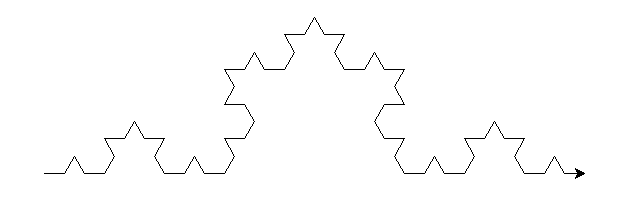
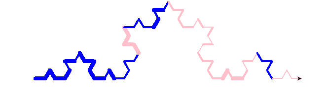
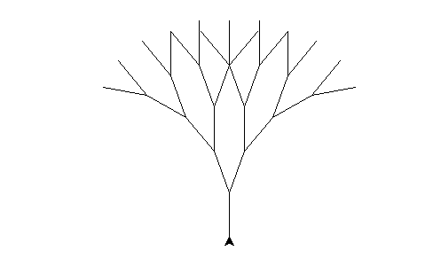
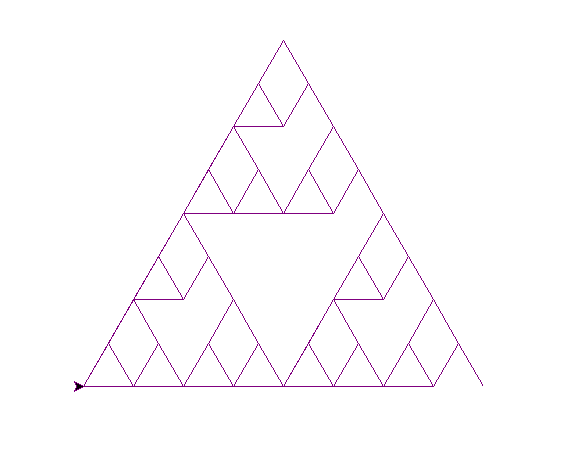
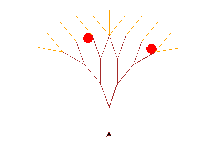

Ruby's Fractals
Kochcurve
Normal koch_curve(t, 4, 20)

The edited Koch Curve randomly picks between pink or blue lines and also increases width by multiplying it by a random number created in the beginning.
(koch_curve2(t, 4, 20, 2))

def koch_curve2(t, depth, size, width):
x = (random.randrange(2)) + 1
y = (random.randrange(2)) + 1
t.width(width)
if (depth == 1):
t.fd(size)
else:
c = random.randrange(10)
if c < 4:
t.pencolor("pink")
else:
t.pencolor("blue")
koch_curve2(t, depth-1, size, width * x)
t.lt(60)
koch_curve2(t, depth-1, size, width * y)
t.rt(120)
koch_curve2(t, depth-1, size, width * x)
t.lt(60)
koch_curve2(t, depth-1, size, width * y)
Sierpinski Triangle
Basic sierpinski(t, 5, 200)

The edited Sierpinski Triangle has the top and bottom left triangles missing their bottom side, making rhombuses and another weird quadrilateral in the center. It's also purple.
(sierpinski2(t, 5, 200))

def triangle(t, size):
t.lt(60)
t.fd(size)
t.rt(120)
t.fd(size)
t.pu()
t.rt(120)
t.fd(size)
t.rt(180)
t.pd()
def sierpinski2(t, depth, size, scale_factor=1):
if depth == 1:
triangle(t, size)
else:
t.pencolor("purple")
sierpinski2(t, depth-1, size/2)
t.fd(size/2)
sierpinski2(t, depth-1, size/2)
t.bk(size/2)
t.lt(60)
t.fd(size/2)
t.pencolor("green")
t.rt(60)
sierpinski2(t, depth-1, size/2)
t.rt(120)
t.fd(size/2)
t.lt(120)
Trees
Normal tree(t, 4, 50, 20)
This tree is brown, has red apples and orange leaves on it. It randomly places apples, which are a red circles, on the branches.
(tree2(t, 4, 50, 20))

t.lt(90)
t.pd()
def apple(size):
t.pencolor("red")
y = 30
while y != 180:
x = 360
while x != 0:
t.lt(y)
t.fd(size)
x = x - 30
y = y + 1
def applerev(size):
t.pencolor("red")
y = 180
while y != 30:
x = 360
while x != 0:
t.lt(y)
t.fd(size)
x = x - 30
y = y - 1
def tree2(t, depth, size, angle):
t.pencolor("brown")
if depth == 0:
t.pencolor("orange")
t.fd(size)
t.bk(size)
t.pencolor("brown")
else:
t.fd(size)
a = random.randrange(4)
if a > 1 and depth < 2:
apple(size/10)
applerev(size/10)
t.pencolor("green")
t.rt(angle)
tree2(t, depth-1, size, angle)
t.pencolor("brown")
a = random.randrange(4)
t.lt(2 * angle)
tree2(t, depth-1, size, angle)
t.rt(angle)
t.bk(size)